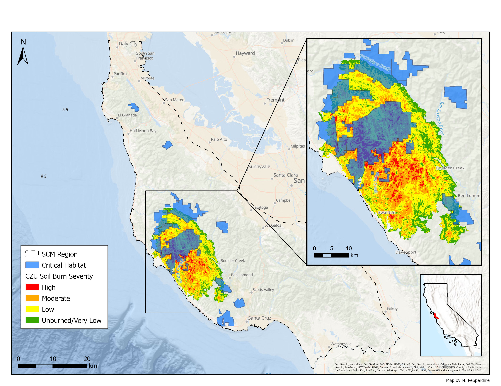
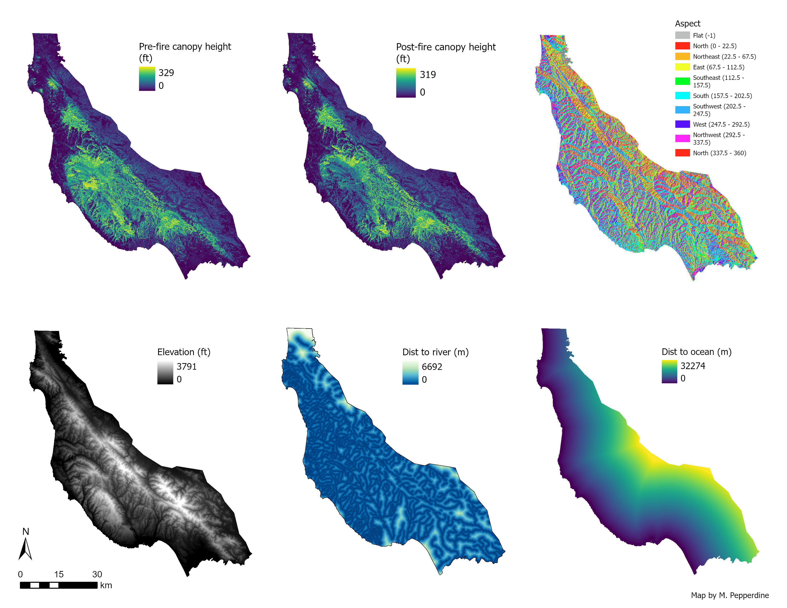
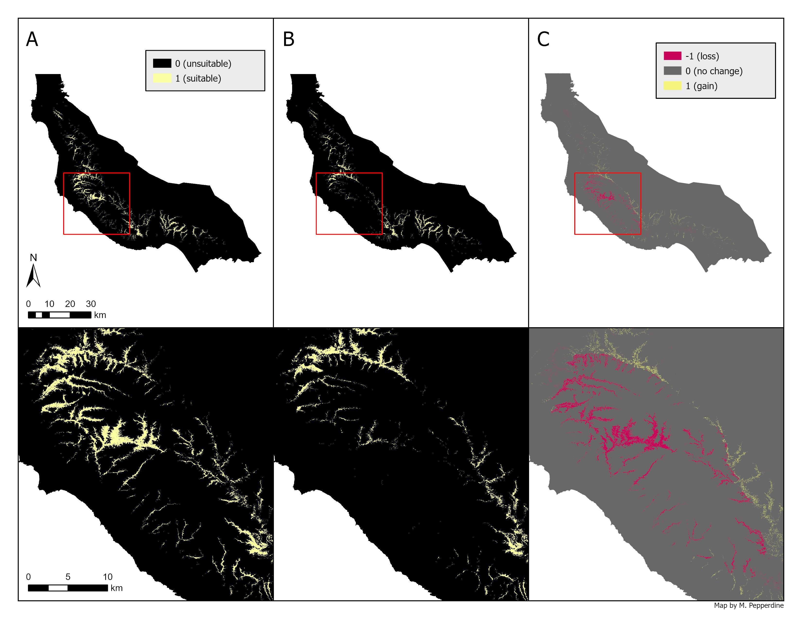
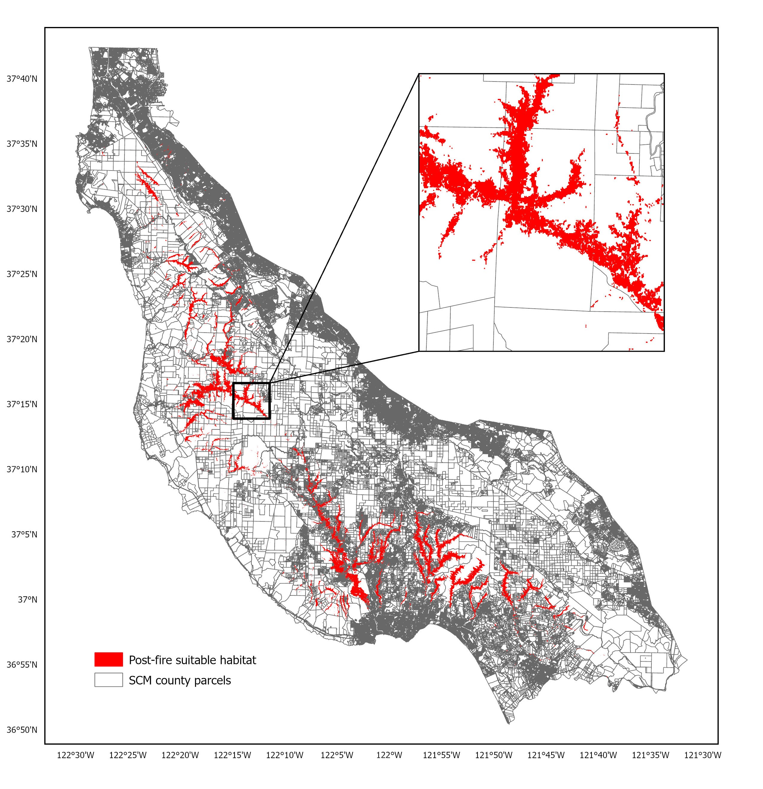
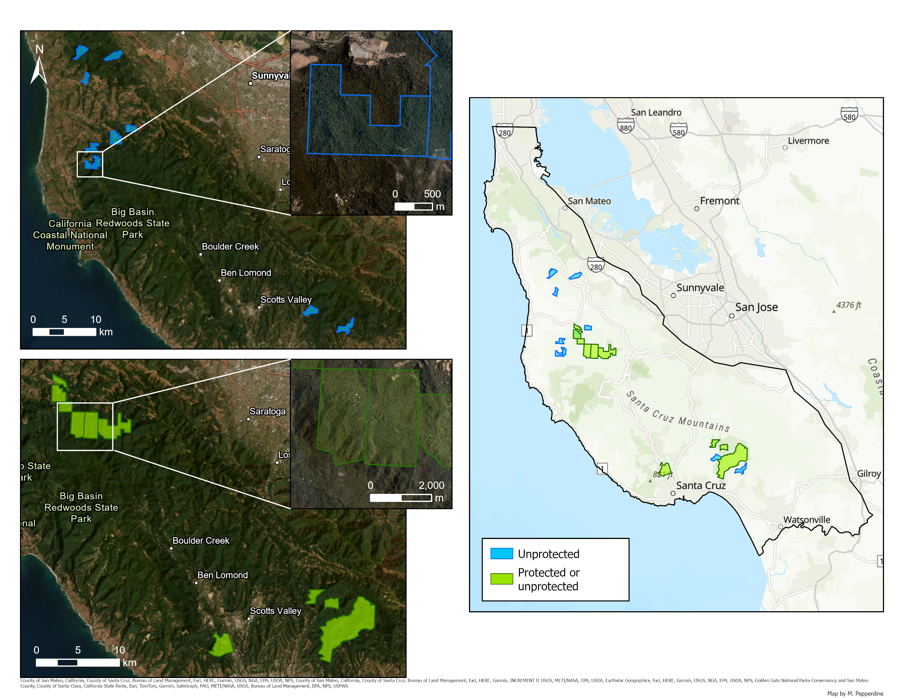
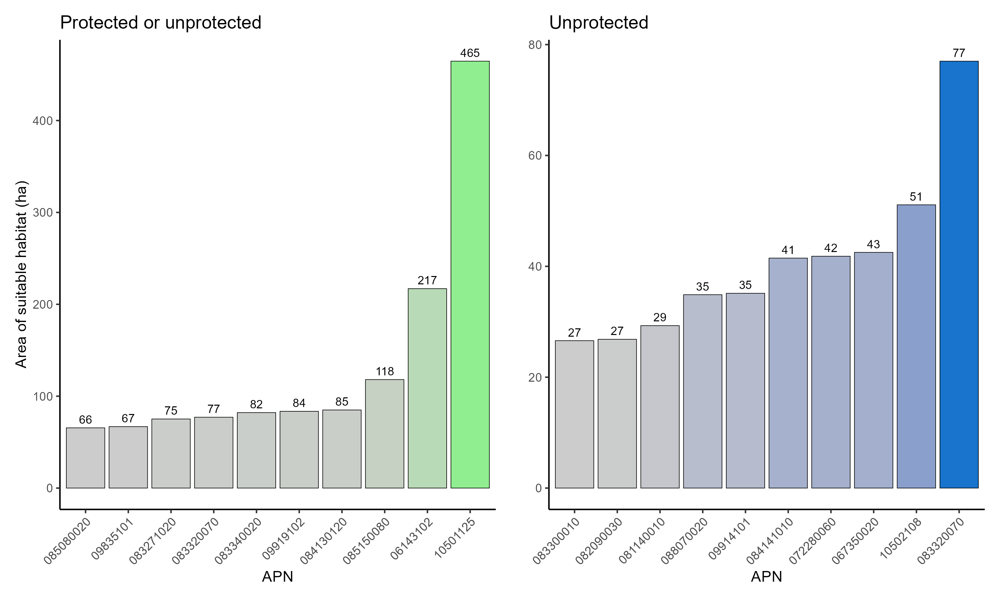

Overview
This analysis was completed as part of a quarter-long project to develop a conservation plan in ESM 270p (Conservation Planning Practicum) at the Bren School of Environmental Science & Management at the University of California, Santa Barbara. The project focused on delineating suitable nesting habitat for the marbled murrelet (Brachyramphus marmoratus) following severe wildfires in the Santa Cruz Mountains (SCM). The background and objectives of the project are described below, as well as some of the main figures. If you are interested in learning more about the project methodology, results and recommendations, or digging through the code and data, please find links to the full project report and GitHub repository below:
- Full Project Report
- GitHub Repository: mamu-conservation-scm
Background
Recovery and preservation of imperiled species are a major focus of conservation planning and one of the key conservation outcomes driving management actions. An avian species that is both imperiled and considered an umbrella species is the marbled murrelet (Brachyramphus marmoratus), a small seabird in the family Alcidae that forages at sea and nests on the large limbs of coastal old-growth forests. They spend most of their lives in near-shore marine environments, flying inland only to breed and nest in the tall canopies of coastal forests. Their at-sea distribution runs along the Pacific Coast from the Aleutian Islands and southern Alaska to southern California, and their breeding range extends from southern Alaska to central California.
Primarily due to loss of habitat from logging and other anthropogenic pressures, the marbled murrelet was listed as “threatened” by the U.S. Fish and Wildlife Service (USFWS) under the Endangered Species Act in 1992 in California, Oregon, and Washington. Later that year, they were listed as “endangered” by the State of California under the California Endangered Species Act. The USFWS designated critical habitat for marbled murrelets in 1995 and then prepared a Federal Recovery Plan in 1997. This plan divided the breeding range of murrelets into six different conservation zones. Zone 6 includes the forested coastal habitats up to 24 km inland from San Francisco Bay to Point Sur in Monterey County, and the population of marbled murrelets in this zone nests primarily in the Santa Cruz Mountain (SCM) region. The SCM population of murrelets has been declining due to a variety of factors, including but not limited to wildfire events, land use change limiting the distribution and availability of contiguous breeding habitat, and increased predation from predators like corvids.
The 2020 CZU Lightning Complex wildfires burned more than 35,000 ha of forest land in Santa Cruz and San Mateo Counties. The majority of areas characterized by high burn severity fell within Big Basin Redwoods State Park (BBRSP), which is a known historic stronghold of suitable nesting trees for marbled murrelets. Figure 1 portrays the USFWS-designated critical habitat for murrelets overlaid with the CZU fire soil burn severity, showing the amount of critical habitat within BBRSP that burned severely during the fires. This geographically separated and endangered population of marbled murrelets was declining prior to these fires decimating their prime nesting habitat. These cumulative threats and recent losses emphasize a need to focus on the top conservation actions for murrelets’ recovery in the Santa Cruz Mountains. A recommended strategy for murrelets in USFWS Zone 6 is to identify, protect, and restore key habitats that can serve as suitable nesting sites (Halbert & Singer, 2017). This project aims to help address this conservation goal through the objectives:
Employ a science-based process to inform habitat preservation, conservation, and recovery efforts for murrelets in the SCM.
Map and delineate the occurrence probability and geographical distribution of suitable nesting habitat using MaxEnt modeling, before and after the 2020 CZU Lighting Complex Fires.
Prioritize county parcels for future land acquisition and protection efforts, conservation easements with local land owners, and acoustic monitoring through a series of spatial overlays and intersections with the MaxEnt results and key data layers (e.g., post-fire suitable habitat, county parcels, and protected areas).
Figures







Acknowledgements
This assignment was created and organized Ashley Larsen, an Associate Professor at the Bren School and the instructor for ESM 270p. ESM 270p (Conservation Planning Practicum) is offered in the Master of Environmental Science & Management (MESM) program at the Bren School as one the foundational courses for the Conservation Planning specialization.
Citation
@online{pepperdine2025,
author = {Pepperdine, Maxwell},
title = {Mapping Suitable Nesting Habitat for an Endangered Bird in
the {SCM}},
date = {2025-01-16},
url = {https://maxpepperdine.github.io/posts/2025-01-16-mamu-scm/},
langid = {en}
}